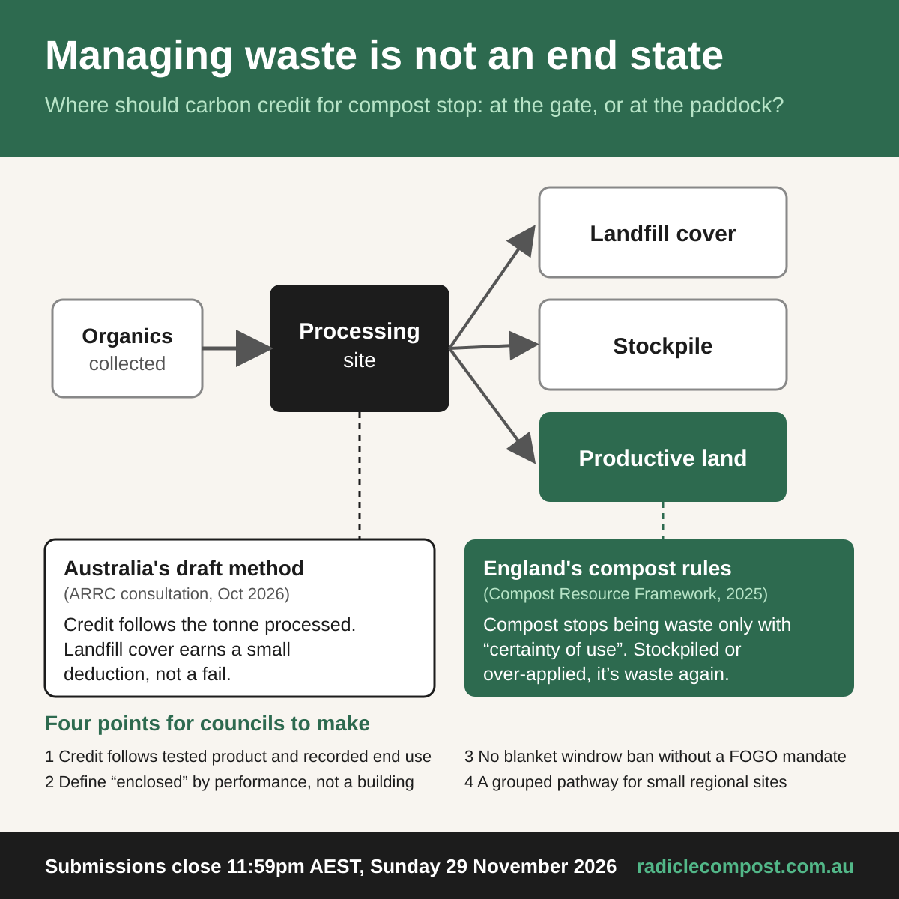

England decided compost only stops being waste when someone uses it. Australia's carbon-credit rewrite should ask the same question.
Australia is rewriting the carbon-credit method for alternative waste treatment. Submissions close at 11:59pm AEST on Sunday 29 November. If your council runs a composting site, or is planning one, this consultation deserves half an hour of your time.
The draft comes from the Australian Resources Recovery Council (ARRC), the industry body for the larger waste and resource recovery operators. It refines the 2015 method rather than starting again, and most of its settings suit big plant. The case for a longer crediting period, for example, rests on facilities costing between $50 million and $1 billion.
For composting, one issue matters more than the rest: where the product ends up.
The committee that assesses carbon-credit methods was wary of composting because compost was being landfilled or stockpiled. The minister's letter to the committee backed a new method that left enclosed composting out altogether.
ARRC wants composting kept in. Its answer is to deduct emissions when compost goes to landfill or is used as landfill cover, and it argues that landfill cover still saves emissions.
That fixes the arithmetic, not the problem. Credit would still follow the tonne processed, with landfill cover treated as a small discount rather than a failure. A tonne spread on a paddock and a tonne spread over a landfill cell would earn close to the same.

England's rules for compost start at the other end. Under the Environment Agency's Compost Resource Framework, which replaced the Compost Quality Protocol in October 2025, certified compost only stops being waste when there is "certainty of use".
The framework is blunt about what that means. Certified compost with little prospect of use is still waste. Compost stored indefinitely, or spread beyond what the soil and crop need, becomes waste again. A producer can't hold a batch for more than ten months, must keep customer supply records for four years, and must tell farm customers they need a nutrient management plan before they spread it.
So in England the test of success isn't that organics were processed. It's that a product was made, sold and used where it does some good.
Landfill cover isn't a new question there either. As far back as 2004, when England was setting up its landfill allowance scheme, the Environment Agency ruled that treated waste used as landfill cover was still being landfilled.
Managing waste is not an end state. Returning it to productive land is.
As drafted, the method would mostly pass regional councils by.
The irony is that regional sites have the best end markets. They sit next to farms. Compost made in the country has a shorter trip to a paddock than compost made in a city.
If your council makes a submission, these are the points I'd put:
You don't need to answer all 55 questions. A short submission backed by evidence from a council that runs, or plans, a regional site will stand out, because most of the draft is written with large facilities in mind. I'll be lodging a submission along these lines myself.
One caution. This is about whether the method rewards the right outcome. It isn't a reason to build a composting business case on carbon credits. The method still has a second consultation to go, and the government's starting position was to leave composting out. The case for composting has to stand on its products.
The consultation paper and the online survey are on ARRC's website.
If you found this useful, or it raised questions about your own council's arrangements, I'd be glad to hear from you. A conversation costs nothing and commits you to nothing. And if your council is thinking about a submission before 29 November and would like a second view on it, now is the time.
Email support@radiclecompost.com.au, or send me a message on LinkedIn.
Sources: Australian Resources Recovery Council, Alternative Waste Treatment method remake, public consultation paper (October 2026); Environment Agency, Compost from waste: resource framework (GOV.UK, October 2025); letsrecycle.com, Agency reveals landfill allowance ruling for MBT outputs (2004).
Martin Tower is the founder of Radicle Compost, an independent, technology-agnostic organics recycling advisory. He has 25 years' experience in composting and organics processing across Eastern Australia.
More on council organics and end markets.
Every situation is different. Tell us about yours and we'll come back to you within 48 hours with an honest assessment of whether and how we can help.